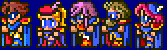
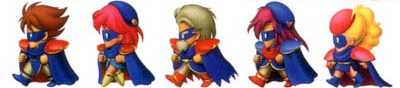
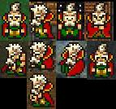
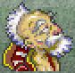
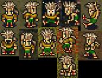
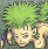
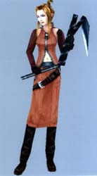

Blue Mage
Appearances: FF5, FF6, FF8, FF9, FF10, FFX-2, FF11, FFTA, FFTA2
Aliases: Gun Mage
This class may have evolved from Scholar, but with extremely increased usefulness. It is the first job class of its kind to be able to cast spells and abilities of other monsters. These spells range from very weak to very powerful, but they are difficult and time-consuming to obtain. In most cases, the Blue Mage has to be attacked with the spell in order to learn it, which becomes a problem with powerful spells and spells meant for healing. With random enemy encounters, this class can be one of the most challenging, but most fun.
Similar Job Classes: Scholar, White Mage, Black Mage, Red Mage, Beastmaster
Expand All Images | Collapse All Images
| FF5 |

 |
| NAME: Blue Mage |
| OVERVIEW: Blue Mages must have the spell targeted to them in order to learn the spell, but once one character learns it, all the characters can use it. If a character has the "Learning" command equipped, it can learn Blue Magic spells, even if it is not currently a Blue Mage. |
| WEAPONS: Knives, Swords, Rods |
| ABILITIES/MAGIC:
!Check - Display HP and weaknesses of enemy
Learning - Learn Blue Magic spells from enemies
!Blue - Cast Blue Magic (default)
!Analyze - Display HP, weaknesses, level, and status of enemy
|
| ATTRIBUTES: High magic, low strength |
|
| FF6 |
|   |
| NAME: Strago Magus |
| OVERVIEW: Strago can learn spells even if he is not the target, they only have to be performed. |
| WEAPONS: Knives, Rods |
| ABILTIES/MAGIC:
Lore - Cast Blue Magic
|
| ATTRIBUTES: Low speed, low attack power |
|
| FF6 |
|   |
| NAME: Gau |
| OVERVIEW: Official job class is Wild Boy. While learning the abilities of the monsters, Gau does not need to have an attack done to him to learn it. However, by selecting the name of a monster, he goes into a berserk mode and uses that monster's attacks at random. Gau fights bare-handed like a Monk. |
| WEAPONS: None |
| ABILTITES/MAGIC:
Leap - Gau attacks the monster, removing it and himself from battle for the time. After a few more battles (if you are still on the Veldt), Gau will return to the party, and have access to the monster's attacks.
Rage - Act like a monster previously leapt on in the Veldt
|
| ATTRIBUTES: High attack power, high speed, high evade, high magic defense |
|
| FF8 |
|  |
| NAME: Quistis Trepe |
| OVERVIEW: Quistis learns Blue Magic through dropped or manufactured items. Using the item from the menu will teach Quistis the spell. |
| WEAPONS: Chain whip |
LIMITS:
Blue Magic:
Laser Eye - Shoot a laser to damage one enemy
Ultra Waves - Emit sound waves for earth-damage
Electrocute - Lightning damage
LV? Death - Cast death on all enemies whose EXP levels are a multiple of a random number between 2 and 5
Degenerator - Dispatch enemies instantly through a black hole
Aqua Breath - Water damage on one enemy
Micro Missile - Gravity damage on one enemy
Acid - Heavy damage with chance of Poison
Gatling Gun - Bombardment of bullets on all enemies
Fire Breath - Fire damage on one enemy
Bad Breath - Inflict all negative status ailments on all enemies
White Wind - Restore HP to allies
Homing Laser - Shoot a laser at all enemies
Mighty Guard - Cast Shell
Shockwave Pulsar - Excessive damage on all enemies
Ray-Bomb - Damage on all enemies
|
| ATTRIBUTES: Low magic power, low speed
|
|
| FF9 |
 |
| NAME: Quina Quen |
| OVERVIEW: Quina must weaken an enemy to Eat it, which eliminates it from battle, and allows him/her to learn its Blue Magic if it has any. |
| WEAPONS: Forks |
ABILITIES/SKILLS:
Blue Magic - Cast Blue Magic
Eat - Consume enemies in critical status. If they have a special Blue Magic attack, Quina will learn it and be able to use it.
Trance:
Cook - Consume enemies with less than 50% HP or certain bosses in critical status. If they have a special Blue Magic attack, Quina will learn it and be able to use it.
| SUPPORT ABILITIES (character specific): Millionaire
| | ATTRIBUTES: Low speed, low magic defense
| |
|
| FF10 |
 |
| NAME: Kimahri Ronso |
| OVERVIEW: Kimahri is also a Dragoon. To learn Blue Magic, Kimahri must perform Lancet on the enemy. Because he starts in the middle of the sphere grid, he has the same chance to learn the abilities of any other party members, depending on which direction the player goes. |
| WEAPONS: Spears |
ABILTIIES/MAGIC:
Lancet - Absorb HP/MP from the enemy, and learn Blue Magic spell (if available)
Overdrive: Ronso Rage
Jump - Leap into air and drive weapon into enemy (already learned)
Fire Breath - Fire damage on all enemies
Self-Destruct - Sacrifice self to cause heavy physical damage
Thrust Kick - Single kick for powerful damage
Stone Breath - Attempt to cause Stone to all enemies
Aqua Breath - Water damage to all enemies
Doom - Cast Doom on an enemy
White Wind - Recover HP for all party
Bad Breath - Inflict multiple status effects on all enemies
Mighty Guard - Cast Protect, Shell, and Nul spells on entire party
Nova - Inflict nuclear damage on all enemies |
| ATTRIBUTES: Average in all stats
|
|
| FFX-2 |
 |
| NAME: Gun Mage |
| OVERVIEW: Gun Mages must be the target of the attack, and survive the attack, in order to learn it. |
| WEAPONS: Magic Gun |
ABILITIES/MAGIC:
Scan - View info about enemy
Fiend Hunter:
Shell Cracker - Inflict 4x damage to Helms
Anti-Aircraft - Inflict 4x damage to Birds and Wasps
Silver Bullet - Inflict 4x damage to Lupines
Flan Eater - Inflict 4x damage to Flans
Elementillery - Inflict 4x damage to Elements
Killasaurus - Inflict 4x damage to Reptiles
Drake Slayer - Inflict 4x damage to Drakes
Dismantler - Inflict 4x damage to Machina
Mech Destroyer - Inflict 4x damage to Mechs
Demon Muzzle - Inflict 4x damage to Imps and Ahrimans
Blue Bullet: Fire Breath, Seed Cannon, Stone Breath, Absorb, White Wind, Bad Breath, Mighty Guard, Supernova, Cry in the Night, Drill Shot, Mortar, Annihilator, Heaven's Cataract, 1000 Needles, Storm Cannon, Blaster |
| SUPPORT ABILITIES: Fiend Hunter Lv.2 (decrease wait time for spell by 40%), Scan Lv.2, Scan Lv.3 |
| ATTRIBUTES: High magic power, high accuracy |
|
| FF11 |
   |
| NAME: Blue Mage |
| OVERVIEW: A monster must use an Blue Magic skill in battle in order to use it. In addition, the character must not be outside the radius in which a monster can grant experience, and the Blue Magic Skill must be at a high enough level to learn the spell. |
| WEAPONS: Uses scimitars (curved blades) best |
| ABILITIES/MAGIC:
Azure Lore - Enhance effect of Blue Magic spells
Burst Affinity - Make the next magical Blue Magic spell able to be used in a Magic Burst
Chain Affinity - Make the next physical Blue Magic spell able to be used in a skillchain
Blue Magic - Cast Blue Magic
|
| SUPPORT ABILITIES: Differs depending on customization |
| ATTRIBUTES: |
|
| FF: Tactics Advance |
  |
| NAME: Blue Mage |
| OVERVIEW: To learn Blue Magic, the user must be hit by the spell. |
| WEAPONS: Saber |
ABILITIES/MAGIC:
Blue Magic: Goblin Punch, Magic Hammer, Acid, Blowup, Mighty Guard, Guard-Off, Dragon Force, Night, Twister, Lv3 Def-less, Poison Claw, Hastebreak, Bad Breath, Stare, Roulette, Matra Magic, Drain Touch, Lv ? S-Flare, White Wind, Angel Whisper
Reaction Abilities: Damage > MP - Convert HP damage to MP damage
Support Abilities: Immunity (resistance to status effects), Learning (learn Blue Magic)
Combo: Blue Combo
|
| ATTRIBUTES: High magic defense |
|
| FF: Tactics A2 |
   |
| NAME: Blue Mage |
| OVERVIEW: Identical to FFTA Blue Mages. |
| WEAPONS: Saber |
ABILITIES/MAGIC:
Blue Magick: Bad Breath, Dragon Force, Eerie Sound Wave, Expose Weakness, Healing Wind, Magick Hammer, Mighty Guard, Night, Quake, Roar, Sandstorm, Screech, Self-Destruct, Unction, War Dance, White Wind
Reaction Abilities: MP Shield - convert HP to MP damage
Support Abilities: Immunity (neither good nor bad status effects can take place)
|
|
Traits of Blue Mage in Other Games
| FF6: Relm can sketch an enemy, creating a clone, essentially, and have access to the monster's attacks. |
| FF7: The Enemy Skill materia allows the user to learn up to 20 monster attacks (that are Blue Magic) as long as the spell is successfully done to the user. |
|
Final Fantasy, all games and animation bearing the Final Fantasy name, and all characters in said games or animation are copyright their respective creators, including but not limited to Squaresoft, Square Enix, Square EA, Tokyo TV, and ADV Films.
 Characters
Characters Places
Places Stories
Stories Species
Species Organizations
Organizations Glossary
Glossary Transportation
Transportation Monsters
Monsters Jobs
Jobs Summons
Summons Items
Items Magic/Skills
Magic/Skills Weapon Types
Weapon Types In-Crossovers
In-Crossovers Ex-Crossovers
Ex-Crossovers Release Dates
Release Dates Name Origins
Name Origins Famous Moments
Famous Moments Music Database
Music Database Features
Features Game Help
Game Help Game Evolution
Game Evolution Square Art
Square Art Fan Flash
Fan Flash Final Fantasy Forums
Final Fantasy Forums Updates
Updates Site Info
Site Info Feedback
Feedback Full Index
Full Index Links
Links Staff
Staff